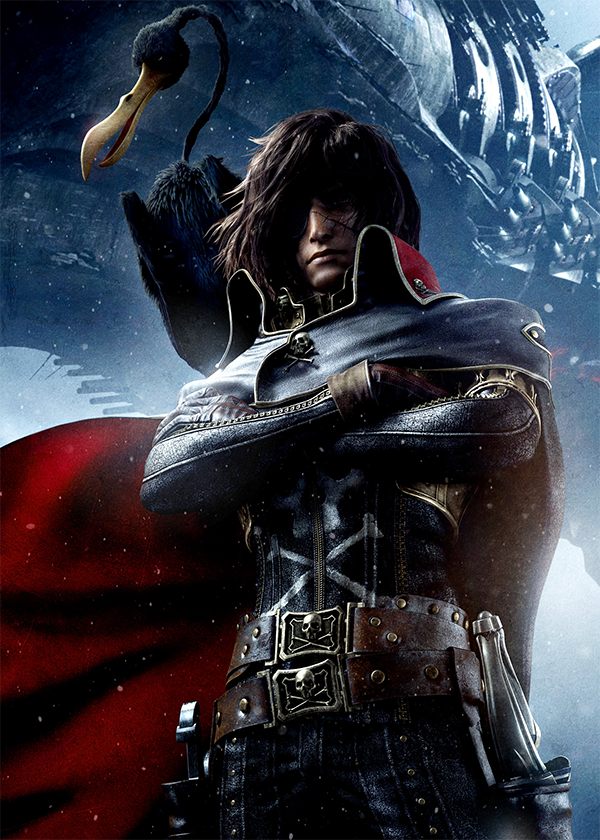

Stephane COMBES
Responsable du design de notre tout nouveau produit phare, Stephane a passé cinq ans sur l'optimisation du portal gun... qui de mieux placé que lui pour en parler?
Le portal gun devait correspondre a plusieurs exigences. son design aérodynamique et fin lui permet d'être à la fois élégant mais aussi très pratique. nous travaillons actuellement sur de nouveaux produits et cherchons activenent des volontaires pour vennir les tester.